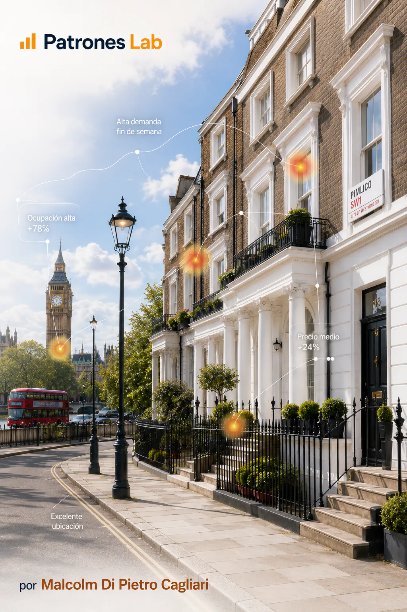

머신러닝 · 프로젝트 04

프로젝트 02 · 데이터 분석
런던 에어비앤비 분석
2025년 9월 런던 에어비앤비 숙소를 탐색적으로 분석했습니다. 숙소 유형과 동네별 가격을 비교하고 최소 숙박일 수와 예약 가능 일수를 살펴본 뒤, 유형 내 상대 가격에 따라 숙소를 분류했습니다.
배경과 목표
런던 에어비앤비 숙소의 가격 차이를 분석합니다. 비슷한 특성을 가진 숙소끼리 가격과 산포를 해석할 수 있도록 유형을 구분합니다. 이 기준으로 지역별 차이와 최소 숙박일 수, 예약 가능 일수의 관계를 살펴봅니다.
2025년 9월 Inside Airbnb 자료에는 1박 요금, 숙소 유형, 동네, 좌표, 최소 숙박일 수, 연간 예약 가능 일수가 담겨 있습니다. 후기 수와 작성일, 월평균 후기 수, 호스트별 등록 숙소 수도 알 수 있습니다. 이를 이용해 유형과 동네별 가격을 비교하고 숙박 조건이 예약 가능 일수와 최근 운영 현황에 어떤 관련이 있는지 살펴봅니다.
중앙값은 보통 가격을, 백분위는 각 집단 내 가격 변동을 보여 줍니다. 이를 바탕으로 숙소 유형과 동네, 숙박 조건을 살펴봅니다. 각 숙소는 같은 유형 내 저가, 중간, 고가로 분류합니다.
데이터 정제
데이터 품질과 비교 가능한 분석 대상
원본 파일에는 숙소 96,870건이 들어 있습니다. Pandas로 날짜와 숫자 형식을 변환하고 금액을 확인한 뒤, 비슷한 조건에서 비교할 수 있는 기록을 골랐습니다. 품질과 운영 여부에 관한 네 가지 기준을 적용해 분석 대상을 정했습니다.
- 1박 요금이 유효한 숙소를 분석하기 위해 가격이 0보다 큰 경우만 포함했습니다.
- 최근 활동이 있는 숙소를 우선하기 위해 마지막 후기가 2023년 9월 14일 이후인 경우만 포함했습니다.
- 최소 숙박일 수가 90일 미만인 숙소로 분석 대상을 한정했습니다.
- 연간 예약 가능 일수가 0보다 큰 숙소만 포함했습니다. 즉, 예약할 수 있다고 등록된 날짜가 있어야 합니다.
점검 후 남은 숙소는 44,019곳으로 원본의 약 45%입니다. 가격과 최근 활동, 최소 숙박일, 예약 가능 일수 조건을 충족한 숙소를 선별해 일관된 기준으로 가격과 특성을 비교합니다.
시각화에서는 극단적인 가격을 별도로 처리합니다. 상자 그림의 범위는 백분위를 기준으로 정하고, 일부 화면에서는 읽기 쉽도록 각 유형의 상위 1%를 제외합니다. Plotly 히스토그램에서는 높은 값의 꼬리 부분을 묶고 로그 눈금으로 범위가 넓은 분포를 비교합니다. 분석용 데이터는 그대로 유지하며 표시 기준은 그래프마다 다릅니다.
분석 및 결과
숙소 유형별 가격
집이나 아파트 전체의 1박 가격 중앙값은 167파운드, 개인실은 59파운드로 거의 세 배 차이입니다. 이 두 유형이 분석 숙소의 거의 전부를 차지하고 호텔 객실과 다인실은 적었습니다.
집 전체 숙소의 가운데 절반은 1박 119~246파운드, 개인실은 45~79파운드에 분포합니다. 숙소 유형에 따라 보통 가격뿐 아니라 가격의 퍼짐도 다릅니다.
지역별 차이
지역별 가격도 다릅니다. 캠던의 1박 가격 중앙값은 약 155파운드, 벡슬리는 약 66파운드입니다. 차이를 해석할 때 지역별 집 전체와 개인실의 구성도 함께 고려합니다.
열지도는 지역별, 숙소 유형별 가격 중앙값을 비교합니다. 각 칸의 금액은 파운드로 유지하고 같은 유형 내 상대 위치를 색으로 표시합니다. 색상 척도는 유형별 중앙값의 최솟값과 최댓값으로 따로 계산합니다.
정규화한 가격 척도
I=\frac{M-M_{\min}}{M_{\max}-M_{\min}}
M은 가격 중앙값입니다. 지수 I는 0~1 사이이며 숙소 유형별로 따로 계산합니다. 값이 클수록 해당 지역의 가격 중앙값이 같은 유형에서 상대적으로 높습니다.
채링크로스까지의 거리를 1km 구간으로 나누어 가격 중앙값도 비교합니다. 런던 도심에서 멀어질 때의 차이를 확인할 수 있습니다.
최소 숙박일과 예약 가능 일수
등록 숙소의 조건을 살펴보기 위해 두 종류의 구간별 가격 중앙값을 비교합니다.
- 최소 숙박일 수는 1~2박, 3~6박, 7~89박으로 나눕니다.
- 연간 예약 가능 일수는 1~30일, 31~90일, 91~180일, 181~365일로 나눕니다.
최소 숙박일과 예약 가능 일수가 다른 숙소 사이에서 가격 중앙값이 어떻게 달라지는지 비교합니다. 등록 숙소 안에서 나타난 연관성을 설명한 결과입니다. 예약 가능 일수는 호스트가 한 해 동안 예약할 수 있다고 표시한 날짜 수입니다.
상대 가격 분류
숙소 유형별 가격의 25·75백분위로 구분합니다. 집 전체와 개인실 등 서로 다른 유형의 가격 차이가 경곗값에 반영됩니다.
숙소 유형별 가격 구간
\text{분류}(p)=\begin{cases}\text{저가},&p\le P_{25}\\\text{안정},&P_{25}<p<P_{75}\\\text{고가},&p\ge P_{75}\end{cases}
p는 1박 가격입니다. 백분위는 숙소 유형별로 계산합니다.
등록 숙소의 거의 절반이 중간 가격대에 속하며 저가와 고가 숙소의 비중은 비슷합니다. 동네별로 이 집단의 구성을 비교하면 같은 숙소 유형 안에서도 지역에 따른 가격대 차이가 드러납니다.
결과물과 배운 점
집 전체와 개인실 사이에 가격과 산포의 차이가 나타납니다. 동네별 비교에서는 각 지역에 어떤 숙소 유형이 많고 가격이 숙박 조건과 예약 가능 일수에 어떤 관련이 있는지 고려합니다.
같은 숙소 유형 안에서 동네별 저가·중간·고가 숙소 분포를 비교합니다. 가격과 등록 조건을 통해 런던의 지역별 숙소 공급 특성을 파악할 수 있습니다.
갤러리